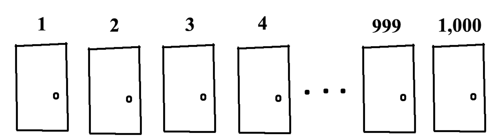
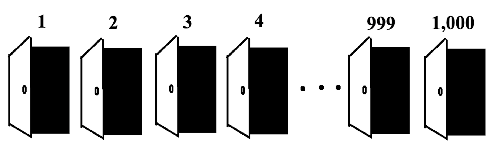
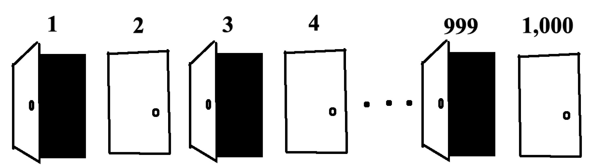
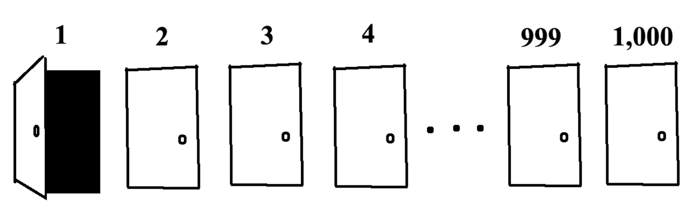

A thousand people line up in front of a thousand closed doors.
fig. 1 A thousand doors
Let "flipping" a door be the act of opening the door if it's closed or closing the door if it's open (yes, it would make more sense for these to be light switches but I already drew the pictures).
The first person flips every door.
fig. 2 After the first person flips every door
Next, the second person flips every second door.
fig. 3 After the second person flips every second door
Then the third person flips every third door.
fig. 4 After the third person flips every third door
This keeps going: the fourth person flips every fourth door, the fifth person flips every fifth door, and so on for all one thousand people. How many doors end up open? Why?
06/27/19